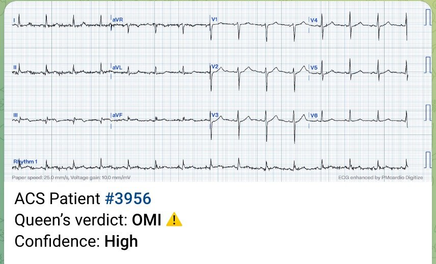
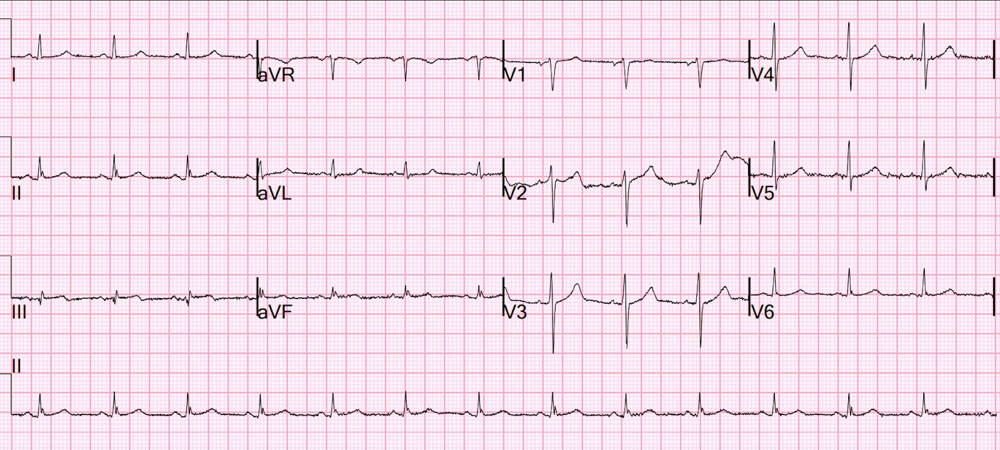
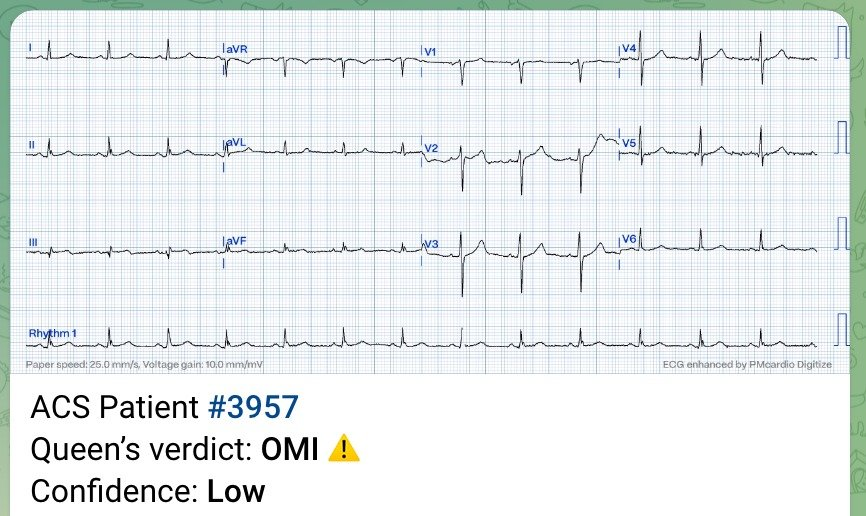
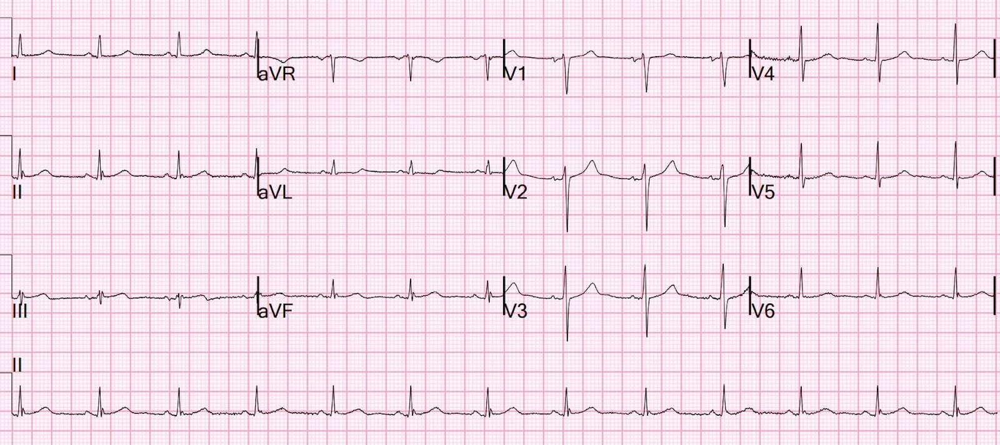
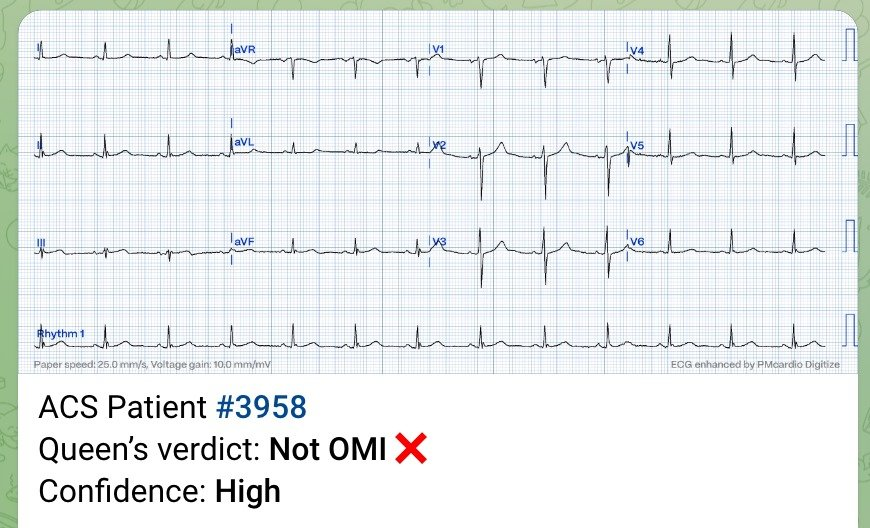
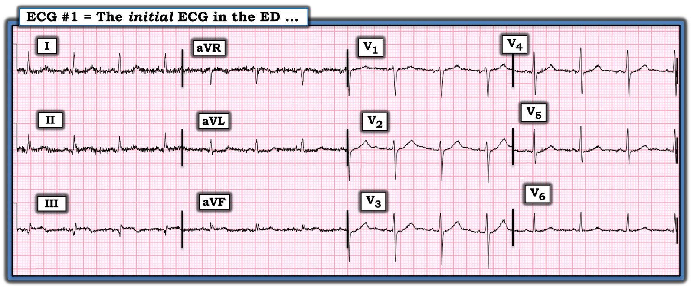

05/09/2023 — Máy tính: “Điện tâm đồ bình thường”, dòng chảy TIMI-3 khi chụp mạch vành: điện tâm đồ này có biểu hiện nhồi máu cơ tim do tắc (OMI) không?
Bản dịch tiếng Việt của bài "Computer: “Normal ECG,” TIMI-3 flow at angiography: Does this ECG manifest Occlusion MI?" – Dr. Smith’s ECG Blog. Giữ nguyên toàn bộ 8 hình ảnh của bản gốc.
Một bệnh nhân nam ở độ tuổi 60 thức dậy vì đau ngực kiểu bóp nghẹt 10/10. Ông tự đi bộ vào khu phân loại (triage).
Đây là điện tâm đồ:

Kết quả đọc bằng máy tính: Điện tâm đồ bình thường. Thuật toán Veritas.
Bác sĩ can thiệp sau khi làm PCI:
THAY ĐỔI ST-T KÍN ĐÁO Ở CÁC CHUYỂN ĐẠO CHI
Với tôi, điện tâm đồ đầu tiên này đủ để chẩn đoán OMI thành dưới.
Tôi đã gửi điện tâm đồ này cho Queen of Hearts (PMcardio OMI), và đây là kết luận:


BẠN CŨNG CÓ THỂ CÓ BOT AI PM Cardio!! (ỨNG DỤNG AI PM CARDIO OMI)
Nếu bạn muốn bot này giúp bạn chẩn đoán sớm OMI, cứu bệnh nhân và cơ tim của họ, bạn có thể đăng ký để nhận phiên bản beta sớm của bot tại đây. Bot chưa được phát hành, nhưng đây là cách để bạn có tên trong danh sách.
https://share-eu1.hsforms.com/18cAH0ZK0RoiVG3RjC5dYdwfyfsg (biểu mẫu đăng ký nhận phiên bản beta của bot)
Phòng thông tim (cath lab) đã được kích hoạt.
Cơn đau của bệnh nhân bắt đầu tự thuyên giảm, vì vậy một điện tâm đồ khác được ghi lúc 22 phút sau điện tâm đồ đầu tiên:


Kết quả đọc bằng máy tính: Điện tâm đồ bình thường. Thuật toán Veritas.
Bác sĩ can thiệp sau khi làm PCI: Điện tâm đồ bình thường
Điện tâm đồ này vẫn đủ để chẩn đoán OMI thành dưới.
Nếu đây là điện tâm đồ đầu tiên của bệnh nhân, tôi sẽ kích hoạt phòng thông tim.
Đây là kết quả đọc của Queen:


Queen cũng cho rằng đây là OMI. Queen không biết rằng đây là cùng một bệnh nhân. Chúng tôi chưa dạy Queen đọc các điện tâm đồ liên tiếp.
Cơn đau của bệnh nhân đã hết hoàn toàn, và điện tâm đồ thứ 3 được ghi ngay trước khi chuyển bệnh nhân đến phòng thông tim, lúc 45 phút sau điện tâm đồ đầu tiên:


Kết quả đọc bằng máy tính: Điện tâm đồ bình thường. Thuật toán Veritas.
Bác sĩ can thiệp sau khi làm PCI: Điện tâm đồ bình thường
Smith đọc: đủ để chẩn đoán OMI thành dưới đang tái tưới máu hoặc đã tái tưới máu.
Queen:


Queen đã đọc sai ca này, nhưng chúng tôi cũng đang dạy Queen nhận biết tái tưới máu.
Tôi dự đoán chụp mạch vành sẽ cho thấy gì?
Tôi dự đoán dòng chảy TIMI-3 (dòng chảy bình thường, không còn thiếu máu cục bộ kéo dài) với tổn thương thủ phạm ở RCA (hoặc có thể ở động mạch mũ). Tôi dự đoán sẽ đặt một stent.
Chụp mạch vành cho thấy động mạch đã thông, hẹp 95% kèm huyết khối, và đã được đặt stent.
Câu đố: Bao nhiêu phần trăm STEMI điển hình rõ ràng có động mạch đã thông với dòng chảy bình thường khi chụp mạch vành?
——20% (và 15% khác có dòng chảy TIMI-1 hoặc TIMI-2)
——Chỉ 65% tắc hoàn toàn 100% và không có dòng chảy
Vì vậy, bản thân việc động mạch đã thông không nói lên điều gì về tình trạng của động mạch lúc bệnh nhân đến viện với đau ngực 10/10 và có điện tâm đồ đủ để chẩn đoán OMI nhưng không phải là STEMI.
Troponin I độ nhạy cao (hs troponin I) lần đầu là 41 ng/L
Troponin I độ nhạy cao đỉnh là 440 ng/L
Trong các nghiên cứu của chúng tôi về điện tâm đồ OMI, ca này lẽ ra đã bị xếp là dương tính giả, vì nếu có dòng chảy TIMI-3, chúng tôi đòi hỏi troponin “rất cao”, mà với troponin I độ nhạy cao thường là lớn hơn 5000 ng/L. Tuy nhiên, đây không thực sự là dương tính giả. Do tái tưới máu tự phát nên tổn thương không lớn, và ngay cả một ca tắc hoàn toàn cũng sẽ bị xếp loại là dương tính giả.
Siêu âm tim chính thức:
–Chức năng tâm thu thất trái bình thường, phân suất tống máu ước tính 60%.
–Rối loạn vận động thành khu trú - giảm động các phân đoạn thành dưới và dưới bên từ giữa đến đáy.
Điện tâm đồ bình thường theo thuật toán thông thường khi đang có nhồi máu cơ tim do tắc cấp
Điều này xảy ra quá thường xuyên.
Hãy tưởng tượng:
Điện tâm đồ thứ 3 là điện tâm đồ đầu tiên. Vì máy tính kết luận “bình thường” nên bạn không được báo. Nhưng bệnh nhân vẫn tiếp tục đau ngực nên bạn cho ghi điện tâm đồ thứ 2 (ở đây là điện tâm đồ 2). Điện tâm đồ này cũng được đọc là “bình thường”, trong khi đau ngực của bệnh nhân giờ đã 10/10, và vì bạn thật sự cẩn thận nên cho ghi điện tâm đồ thứ 3. Điện tâm đồ này cũng “bình thường”, và bạn kết luận rằng đây không phải OMI hay STEMI, rồi chỉ quyết định làm troponin. Trong lúc đó, rất nhiều cơ tim đã mất đi.
Tôi có hơn 40 ca OMI ở đây được thuật toán thông thường đọc là “bình thường”. Chúng không chỉ là “Bất thường ST-T không đặc hiệu” – kết luận mà ít ra còn báo cho bác sĩ biết rằng điện tâm đồ không bình thường. Chúng được đọc là hoàn toàn BÌNH THƯỜNG!!
Jesse McLaren và cs. (gồm cả Pendell và Smith) vừa công bố bài báo này:
Emergency department Code STEMI patients with initial ECG labeled ‘normal’ by computer interpretation: a 7-year retrospective review (Bệnh nhân báo động STEMI tại khoa cấp cứu có điện tâm đồ ban đầu được máy tính đọc là ‘bình thường’: tổng quan hồi cứu 7 năm)
Trong số 394 lần kích hoạt phòng thông tim dương tính thật, 16 lần (4,1%) có điện tâm đồ được máy tính đọc là “bình thường”.

===================================
BÌNH LUẬN CỦA TÔI, bởi KEN GRAUER, MD (5/9/2023):
===================================
Khi lần đầu nhìn thấy bản ghi ban đầu của ca hôm nay — tôi đã nghĩ, “Quá nhiều nhiễu!”. Dù vậy — cả Dr. Smith và QOH (Queen Of Hearts) đều lập tức đọc bản ghi này là “đủ để chẩn đoán OMI” .
- Để rõ ràng, và để thuận tiện cho việc NHÌN lại một lần nữa — tôi đã đăng lại bản ghi ban đầu của ca hôm nay trong Hình 1.
- LƯU Ý: QOH đã đọc bản ghi ban đầu của ca hôm nay mà không có thêm thông tin bệnh sử “đau ngực kiểu bóp nghẹt 10/10 mới khởi phát”. Biết được bệnh sử này lập tức (và rõ rệt) làm tăng khả năng bất kỳ dấu hiệu điện tâm đồ nào (kể cả khi kín đáo) có thể chỉ ra một biến cố cấp. Vì vậy, bất chấp nhiễu — và ngay cả khi không có bất kỳ bệnh sử nào — điện tâm đồ ban đầu này phải được đọc là một biến cố cấp cho đến khi chứng minh được điều ngược lại.
Hãy NHÌN lại một lần nữa điện tâm đồ ban đầu của ca hôm nay trong Hình 1.
- NHỮNG dấu hiệu điện tâm đồ cụ thể nào trên bản ghi ban đầu này nói lên rằng, “OMI cấp cho đến khi bạn chứng minh được điều ngược lại?”.


VÌ SAO điện tâm đồ trong Hình 1 đủ để chẩn đoán OMI cấp?
Dù có nhiễu đường nền rõ rệt (đặc biệt ở các chuyển đạo chi) — chúng ta vẫn thấy nhịp trong Hình 1 là nhịp xoang (với sóng P dương ở mỗi chuyển đạo trước ngực, xác nhận nhịp xoang với khoảng PR cố định và bình thường).
- Tất cả các khoảng (PR, thời gian QRS, QTc) và trục mặt phẳng trán đều bình thường.
- Không có lớn buồng tim.
Các dấu hiệu bất thường MẤU CHỐT ở chuyển đạo chi gồm:
- Các chuyển đạo thành dưới cho thấy sóng Q lớn (và tương đối rộng) ở chuyển đạo III. Rõ ràng có ST chênh lên ở chuyển đạo III, và có lẽ cả ở chuyển đạo aVF (và có thể cả ở chuyển đạo II). Xét đến biên độ QRS rất nhỏ ở các chuyển đạo thành dưới này — mức ST chênh lên tương đối là đáng kể. Mọi nghi ngờ cần được loại bỏ về ý nghĩa của các thay đổi ST-T này ở chuyển đạo III và aVF, vì có sóng T đảo ngược phần cuối bất thường rõ rệt thấy rõ ở chuyển đạo III.
- Sự xác nhận cuối cùng về ý nghĩa của các thay đổi điện tâm đồ cấp ở chuyển đạo thành dưới này — đến từ hình ảnh ST-T soi gương ngược chiều, đối xứng như ảnh trong gương ở chuyển đạo aVL (tức là, không còn nghi ngờ gì rằng ST chênh xuống dẹt kèm phần cuối sóng T dương lớn không tương xứng cho thấy một thay đổi soi gương cấp ở chuyển đạo aVL này).
Như rất thường gặp, khi có các thay đổi của OMI thành dưới cấp — thường cũng sẽ có các thay đổi ở các chuyển đạo trước ngực phù hợp với OMI thành sau cấp.
- Điểm MẤU CHỐT: Các thay đổi ở chuyển đạo trước ngực của OMI thành sau cấp kín đáo đến mức trên điện tâm đồ ban đầu này — trừ khi bạn chủ động tìm chúng, chúng có thể DỄ bị bỏ sót!
- Bình thường phải có ít nhất một mức nhỏ (tức là 1-2 mm) ST chênh lên dốc lên thoai thoải ở các chuyển đạo trước V2 và V3. Dấu hiệu này không có trên điện tâm đồ ban đầu của ca hôm nay. Thay vào đó, thậm chí còn có ST dẹt ở chuyển đạo V2 — điều mà, trong bối cảnh các dấu hiệu điện tâm đồ đủ để chẩn đoán OMI thành dưới cấp ở các chuyển đạo chi — là dấu hiệu chẩn đoán OMI dưới-sau cấp trên bản ghi ban đầu này!